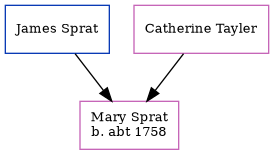

The child of James Sprat and Catherine Tayler, Mary Sprat, the five times great-aunt of Nigel Horne, was born c. 1758 and baptized in St Lawrence, Thanet, Kent, England on Aug 20, 1758.
Parents
Family Tree

Generated by Ged2Site. Last updated on Jul 20, 2025